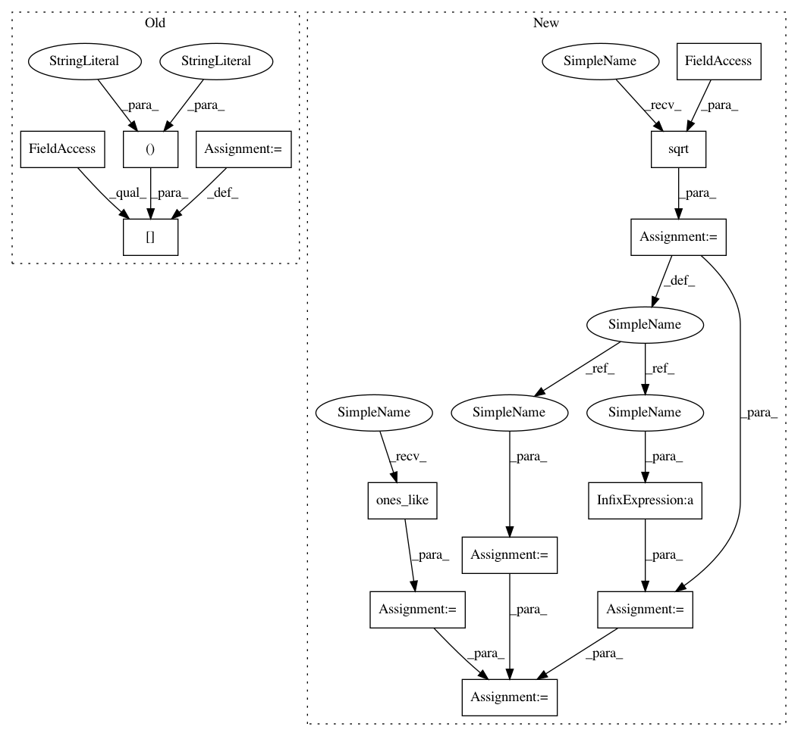

aae5f35d7b2e167a2d3c0af0f44542448c36557d,linearmodels/tests/panel/test_panel_ols.py,,test_const_data_entity_weights,#Any#,74
Before Change
w = mod.weights.dataframe
x = mod.exog.dataframe
d = mod.dependent.dummies("entity", drop_first=True)
d.iloc[:, :] = d.values - x.values @ np.linalg.lstsq(x.values, d.values)[0]
xd = np.c_[x.values, d.values]
xd = pd.DataFrame(xd, index=x.index, columns=list(x.columns) + list(d.columns))
After Change
d = mod.dependent.dummies("entity", drop_first=True)
d_columns = list(d.columns)
root_w = np.sqrt(w.values)
z = np.ones_like(x)
wd = root_w * d.values
wz = root_w
d = d - z @ np.linalg.lstsq(wz, wd)[0]
xd = np.c_[x.values, d.values]
xd = pd.DataFrame(xd, index=x.index, columns=list(x.columns) + d_columns)
In pattern: SUPERPATTERN
Frequency: 3
Non-data size: 13
Instances
Project Name: bashtage/linearmodels
Commit Name: aae5f35d7b2e167a2d3c0af0f44542448c36557d
Time: 2017-04-04
Author: kevin.k.sheppard@gmail.com
File Name: linearmodels/tests/panel/test_panel_ols.py
Class Name:
Method Name: test_const_data_entity_weights
Project Name: bashtage/linearmodels
Commit Name: aae5f35d7b2e167a2d3c0af0f44542448c36557d
Time: 2017-04-04
Author: kevin.k.sheppard@gmail.com
File Name: linearmodels/tests/panel/test_panel_ols.py
Class Name:
Method Name: test_const_data_time_weights
Project Name: bashtage/linearmodels
Commit Name: aae5f35d7b2e167a2d3c0af0f44542448c36557d
Time: 2017-04-04
Author: kevin.k.sheppard@gmail.com
File Name: linearmodels/tests/panel/test_panel_ols.py
Class Name:
Method Name: test_const_data_both_weights
Project Name: bashtage/linearmodels
Commit Name: aae5f35d7b2e167a2d3c0af0f44542448c36557d
Time: 2017-04-04
Author: kevin.k.sheppard@gmail.com
File Name: linearmodels/tests/panel/test_panel_ols.py
Class Name:
Method Name: test_const_data_entity_weights